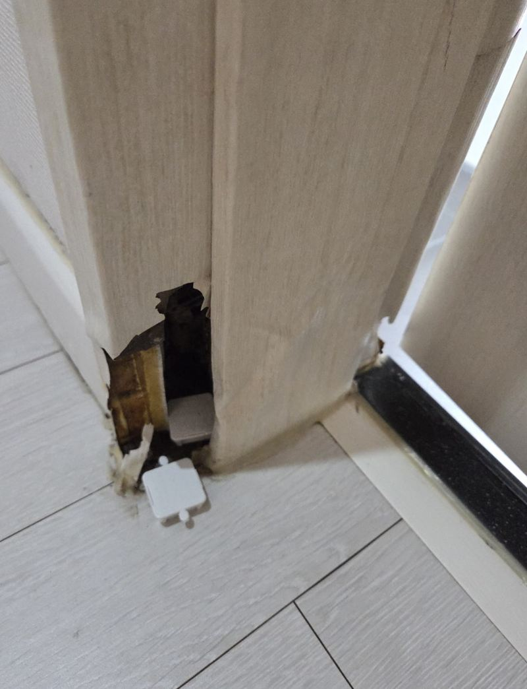
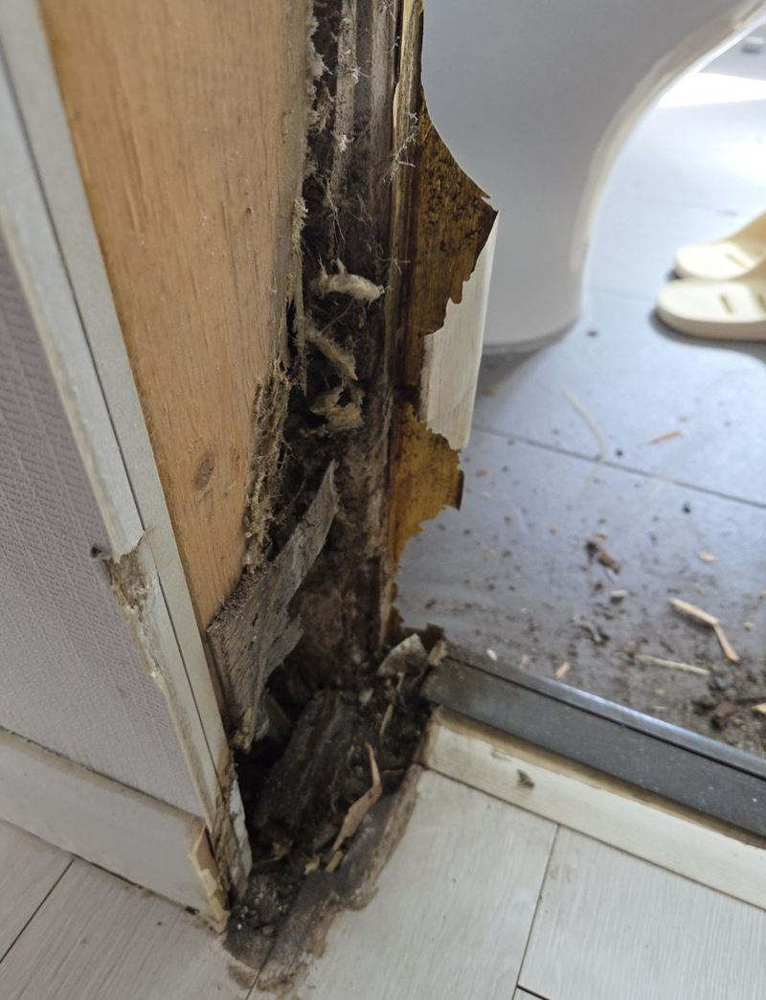
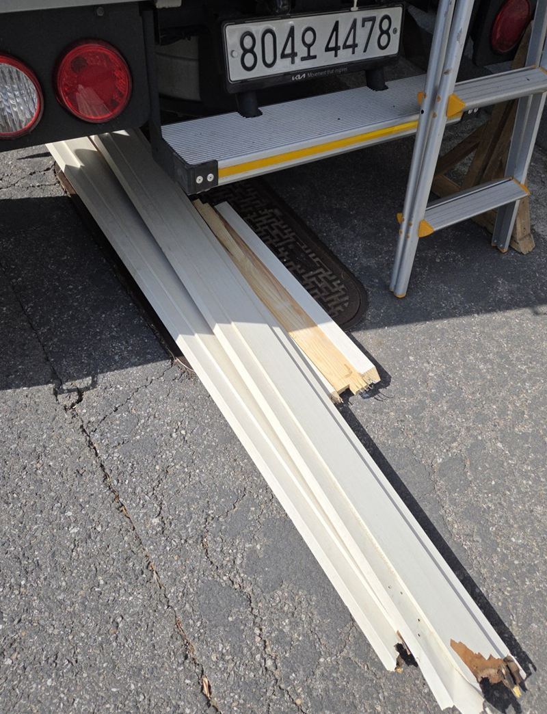
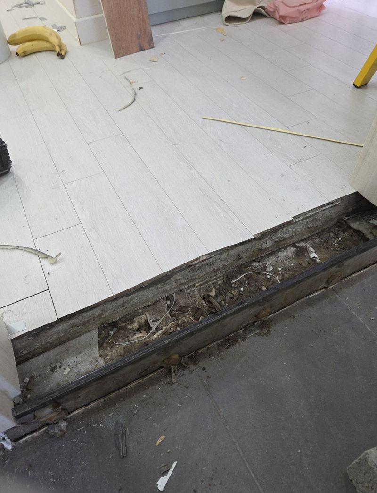
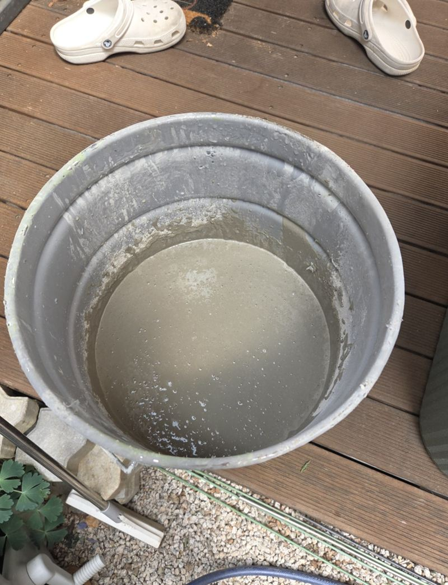
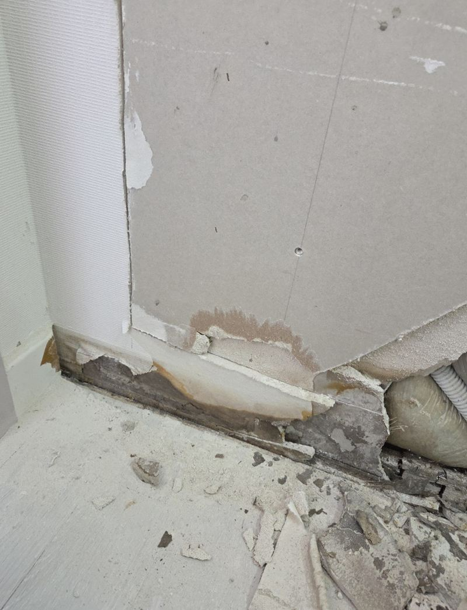
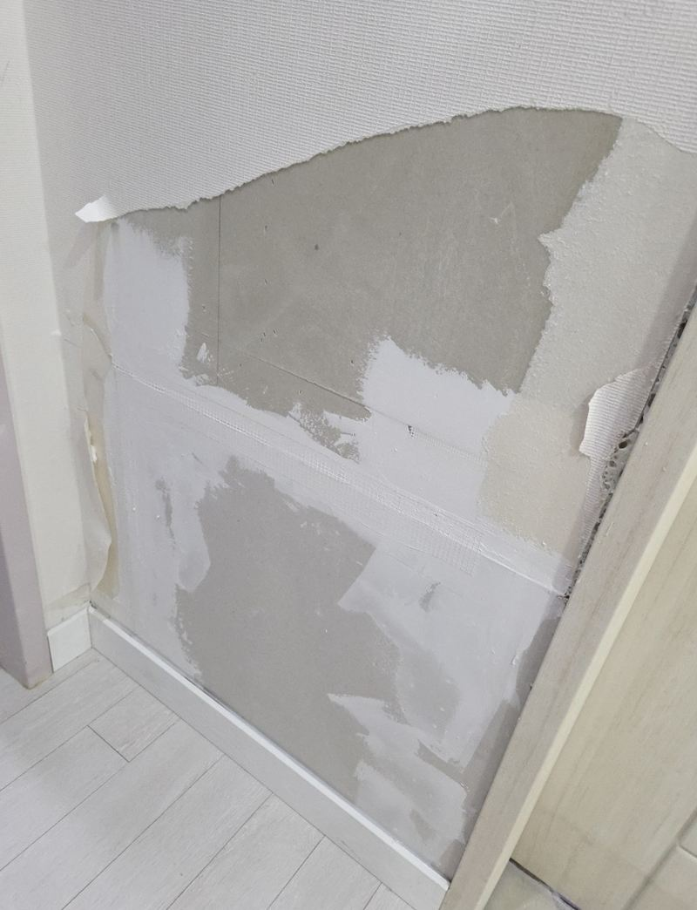
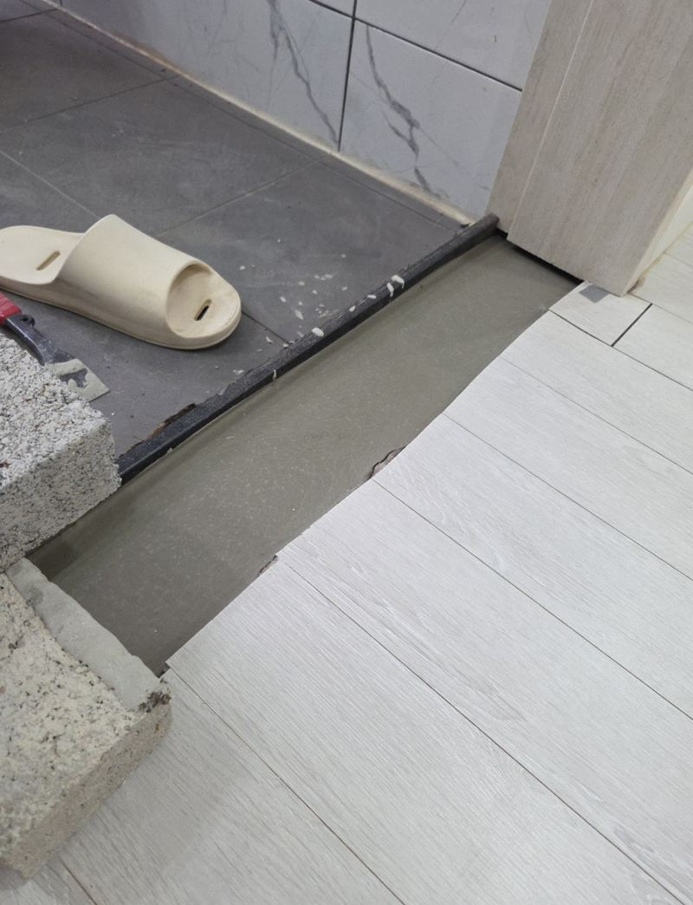

용인 기흥 물에 불은 화장실문 교체와 석고 복원

 교체 전교체 후
교체 전교체 후← 밀어서 전후 비교 →
화장실 문이 잘 안 닫히고, 문틀 아래쪽이 손으로 누르면 푹 들어갈 만큼 부풀어 있었어요. 주변 벽 마감도 조금씩 무너져 내리고 있었고요. 겉만 바꾸면 같은 일이 반복될 상태라, 문틀을 걷어 내고 바닥과 벽부터 다시 잡았어요.
문짝이 아니라 문틀이 문제였어요
욕실 습기를 오래 먹은 목재 문틀은 겉보다 속이 먼저 썩어요. 철거해 보니 문틀 하단 안쪽이 비어 있을 정도였고, 개미가 살던 흔적까지 나왔어요. 이런 상태에서는 문짝만 새로 달아도 틀이 계속 틀어져서 결국 다시 안 닫혀요.



바닥 높이부터 다시 맞췄어요
문틀을 빼낸 자리 바닥은 높이가 들쭉날쭉했어요. 기존 마루와 문지방을 정리하고, 몰탈을 부어 평평하게 맞췄어요. 문턱 자리에는 물에 강한 디딤석을 올려 마감했어요. 바닥이 바르지 않으면 새 문틀도 기울어서 다시 틀어져요.


무너진 석고벽 복원
문틀 옆 벽도 습기에 젖어 석고보드가 부서져 있었어요. 상한 부분을 잘라 내고 새 석고보드로 덧대 표면을 정리해, 나중에 도배나 마감을 바로 할 수 있게 해 뒀어요.


새 문틀과 문짝 설치
미리 만들어 온 문틀을 수평·수직에 맞춰 고정하고 문짝을 달았어요. 여닫기를 여러 번 해 보며 걸리는 곳이 없는지 확인한 뒤 마무리했어요.

- 이 현장에서 한 일문틀 철거 → 바닥 몰탈 평탄화 → 석고보드 복원 → 디딤석 → 문틀·문짝 설치
- 문짝만 교체할 때와 다른 점바닥과 벽 보강이 더해져 작업 범위와 비용이 커져요.
욕실 문, 이런 증상이면 문틀까지 보세요
- 문 아래쪽 칠이 부풀어 터졌어요습기를 오래 먹은 신호예요. 문틀 아래도 눌러 보고 들어가는지 확인해 보세요.
- 문이 점점 안 닫혀요문틀이 휘었거나 바닥이 내려앉았을 수 있어요. 문짝만 바꾸면 다시 걸릴 수 있어요.
- 문틀 옆 벽지가 들뜨고 부스러져요안쪽 석고보드가 젖은 경우예요. 문 교체 때 벽까지 같이 복원해요.
- 작은 벌레가 자꾸 나와요썩은 목재에 벌레가 사는 경우가 있어요. 철거하면서 상태를 확인해요.
욕실 문 교체 질문
문틀이 썩었는지 어떻게 알 수 있나요?
문틀 아래쪽을 손가락으로 눌렀을 때 들어가거나, 칠이 부풀어 갈라져 있으면 속이 상했을 가능성이 커요.
새 문도 또 불지 않을까요?
욕실용 자재와 물에 강한 문턱을 쓰고, 문 아래로 물이 고이지 않게 하면 훨씬 오래가요.
작업 동안 화장실을 못 쓰나요?
문틀을 바꾸는 동안은 문이 없는 상태예요. 몰탈이 굳는 시간도 있어 일정을 미리 안내해요.
화장실 문틀 교체는 하루에 끝나나요?
문틀 철거부터 문짝 설치까지 진행하지만, 몰탈이 굳는 시간 때문에 바로 세게 밟으면 안 되는 구간이 있어요.
문 색을 다른 방문과 맞출 수 있나요?
비슷한 색과 무늬의 문짝을 찾아 드려요. 다른 방문 사진을 같이 보내 주시면 고르기 쉬워요.
욕실 문턱을 디딤석으로 하면 좋은 점이 있나요?
돌 재질이라 물에 젖어도 썩지 않아요. 나무 문지방이 자꾸 상하는 집이라면 바꿔 볼 만해요.
문틀까지 바꾸면 도배도 다시 해야 하나요?
석고를 복원한 자리는 도배나 마감을 새로 해야 깔끔해요. 같은 벽지가 남아 있다면 그 부분만 덧발라도 돼요.
아파트 관리사무소에 신고해야 하나요?
단지마다 공사 신고 규정이 달라요. 소음이 나는 작업이라 미리 문의해 두시면 좋아요.
다른 방문·욕실문 현장
문 전체와 문틀 아래쪽, 옆 벽 상태를 찍어서 보내 주세요.
전화 상담 010-4517-9872